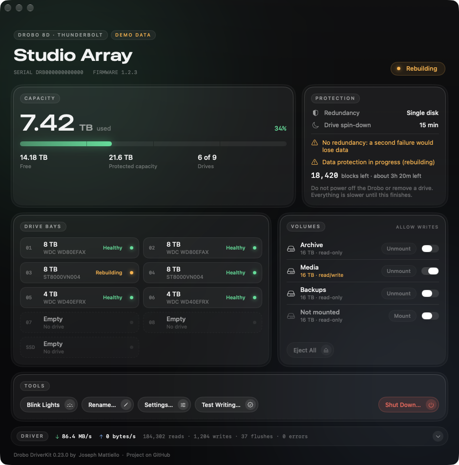
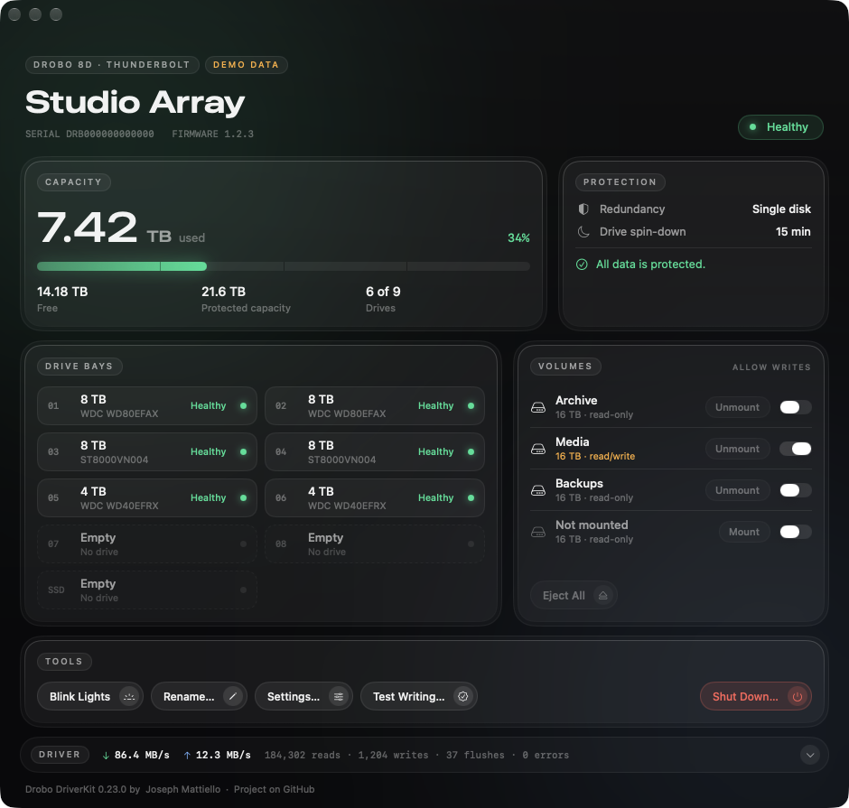

Your Drobo 8D, on a current Mac.
Drobo, Inc. is gone, and its Thunderbolt driver is a kernel extension that modern Macs only load with security turned down. This replaces it with a DriverKit driver extension and a dashboard. No kext, no Reduced Security, and System Integrity Protection stays on.
Open source under the MIT license. Not affiliated with Drobo, Inc. Screenshots show the app's built-in demo data.


What works today, and what has not been checked.
The driver talks to hardware that holds someone's data, so every feature is listed with how far it has been verified on a real unit. The full audit is in the coverage document.
Today this is a way to get your data off a Drobo 8D using a current Mac, and to see what state the unit is in while you do.
HFS+ volumes mount read-only over Thunderbolt 3.
Health at a glance
Capacity, drive bays, rebuild progress and alerts, in the included app and its menu bar item.
Writing
Off by default. You enable it per volume in the app. It is implemented but not yet verified on hardware, so keep a copy of anything on a volume you make writable.
Management tools
Blink lights, rename, safe shutdown, dual disk redundancy and spin-down settings are in the app. They have not yet been verified on hardware.
Out of scope
Creating or deleting Drobo volumes, firmware updates and reset. Intel Macs should keep using Drobo's original driver. Other Thunderbolt models are untested.
There is no download yet. You build it once.
Apple controls which developers may ship hardware drivers. Anyone with a paid developer account can run this on their own Macs. One build that works on everyone's Mac needs Apple to grant distribution entitlements for this hardware, and that request is pending.
- 01An Apple silicon MacM1 or later, running macOS 14 or later.
- 02A Drobo 8D and a real Thunderbolt 3 cableThe one with the lightning-bolt logo. A plain USB-C cable looks the same and will not work.
- 03A paid Apple Developer Program membershipUS $99 a year. Apple does not allow driver capabilities on free accounts.
- 04Xcode and HomebrewBoth free. You copy a few commands into Terminal; you do not need to know how to program.
Set up for contributors who do not have the hardware.
Almost nobody has a Drobo 8D on their desk. The repository says what each change must prove, and which backlog items need a maintainer to run them on a real unit.
Unit tests for the management page decoders
The app's decoders have no tests. Add a test target with fixture bytes per page and run it in CI.
Reverse-engineer Drobo Dashboard 3.6.1
It has not been analysed. Documenting the commands it sends decides coverage of restart, LED brightness and SSD cache management.
Writes stay off by default.
They are opt-in per volume and that default does not change. Destructive management commands are out of scope. A pull request that only compiles says so: "compiles; not run on hardware".
One unsigned build
brew install xcodegen
xcodegen generate
xcodebuild -scheme DroboHost CODE_SIGNING_ALLOWED=NO build